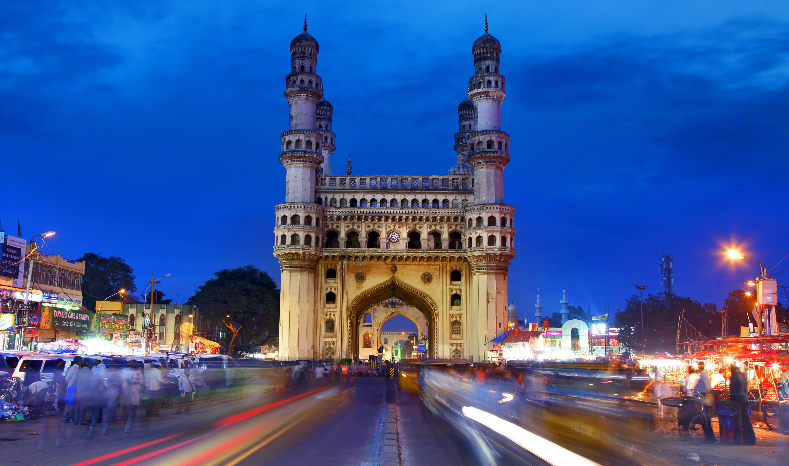

RED FORT: The Red Fort, also known as Lal Qila, is a historic Mughal fort in Old Delhi, India. Built by Emperor Shah Jahan in 1639, it served as the primary residence of the Mughal emperors. The fort is famous for its massive red sandstone walls, intricate architecture, and rich history. It was designated a UNESCO World Heritage Site in 2007. Every year on India’s Independence Day (15 August), the Prime Minister hoists the national flag at the fort and delivers a speech.
Learn More
Qutub Minar: The Qutb Minar, also spelled Qutub Minar and Qutab Minar, is a minaret and "victory tower" that forms part of the Qutb complex, which lies at the site of Delhi's oldest fortified city, Lal Kot, founded by the Tomar Rajputs.
Learn More
Hawa Mahal: The Hawa Mahal is a palace in the city of Jaipur, Rajasthan, India. Built from red and pink sandstone, it is on the edge of the City Palace, Jaipur, and extends to the Zenana, or women's chambers
Learn More
India Gate: The India Gate (formerly known as All India War Memorial) is a war memorial located near the Kartavya path on the eastern edge of the "ceremonial axis" of New Delhi, formerly called Rajpath.
Learn More
Charminar: he Charminar ('four minarets') is a monument located in Hyderabad, Telangana, India. Constructed in 1591, the landmark is a symbol of Hyderabad and officially incorporated in the emblem of Telangana
Learn More